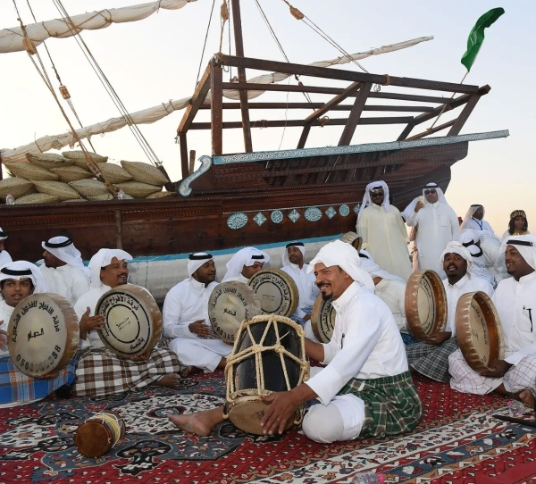
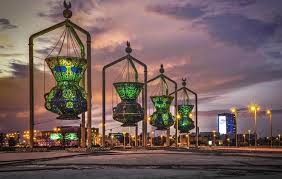
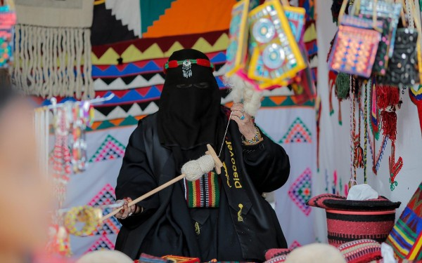
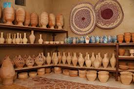
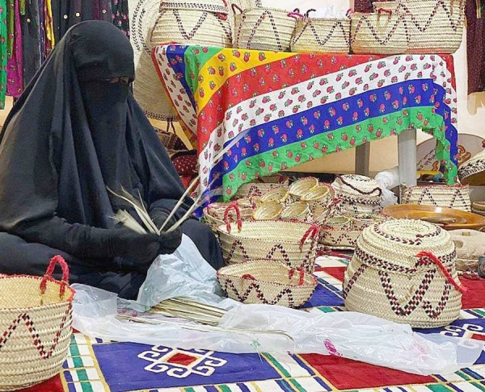
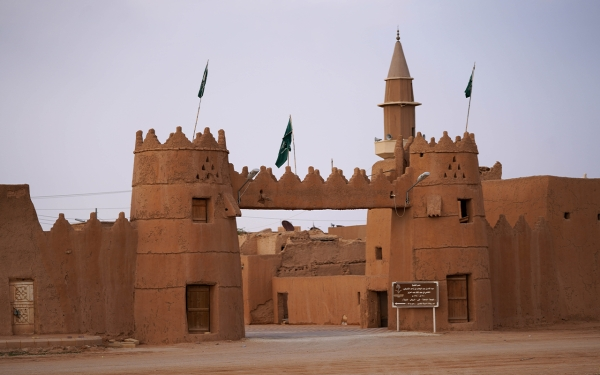
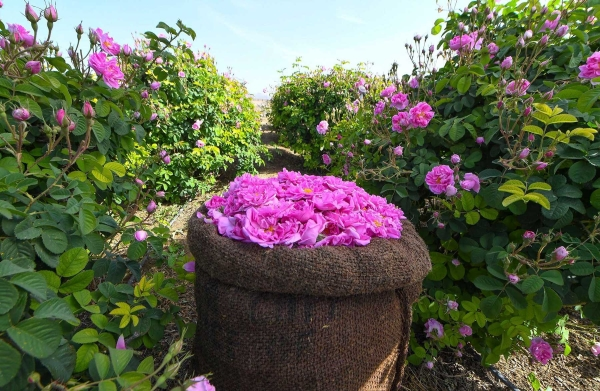
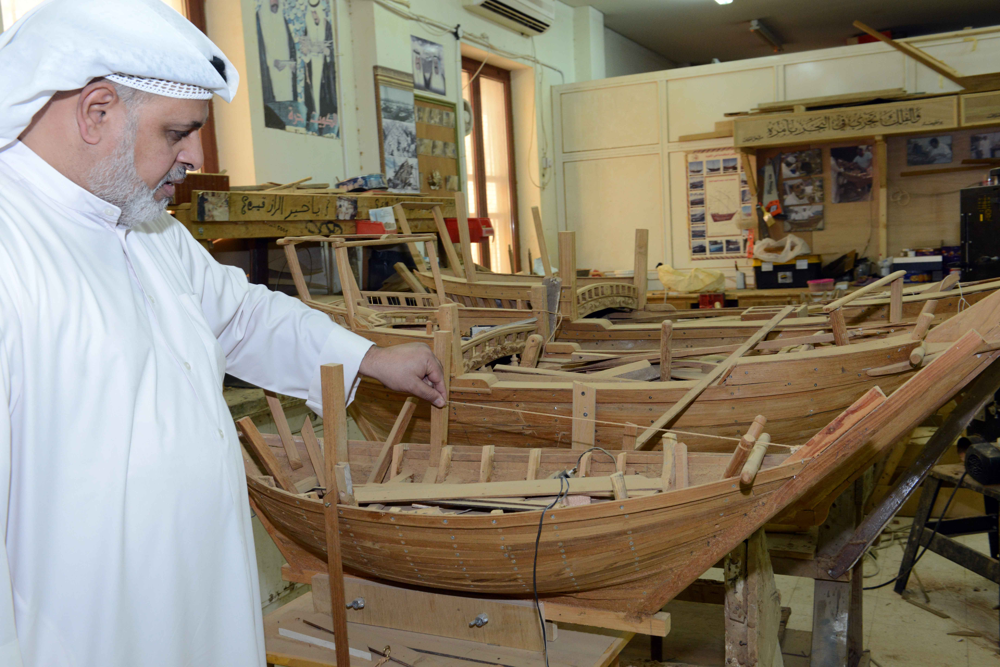
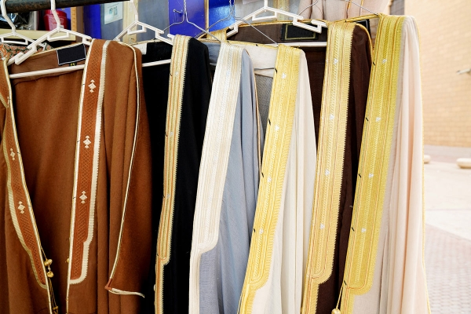

الفنون التقليدية في المملكة العربية السعودية
هنا يمكنك استكشاف فنوننا التقليدية والتعرف عليها
هنا يمكنك استكشاف فنوننا التقليدية والتعرف عليها

الفجري هو نوع من الغناء البحري التقليدي وفن شعبي قديم اشتهر في دول الخليج العربي. يستمد اسمه من آلة "الفجري" أو "الجحل" الفخارية، وهي الأداة الأساسية المستخدمة في أداء هذا الفن.

القط العسيري هو فن تقليدي للنقش والزخرفة في منطقة عسير جنوب غرب المملكة العربية السعودية. يعتمد على رسم أشكال هندسية ونباتية باستخدام الألوان الأساسية مباشرة على الجدران الداخلية للمنازل ومناطق الاستقبال.

فن المجس هو شكل من أشكال الغناء الشعبي الحجازي التقليدي القديم. عُرف في البداية بإنشاد الرعاة، ثم تطور ليسمى الإنشاد المتقن، وتطور لاحقاً ليشمل المقامات، حتى أصبح يُعرف أخيراً باسم المجس.

مجسم الفوانيس الأربعة (مشكاوات المساجد المملوكية) يقع في شارع الأندلس وتضاء جميعها من الداخل. استند تصميم هذا المجسم إلى المصابيح التي كلف سلاطين المماليك وأمراؤهم بصنعها لمساجد القاهرة في منتصف القرن الرابع عشر.

نشأت حرفة السدو التقليدية بين القبائل العربية في شبه الجزيرة العربية القديمة. ساهمت تقنيات الحرف اليدوية في المملكة في نموها لتصبح واحدة من أشهر الفنون التقليدية في تاريخ المملكة. يتم الاحتفاء بها الآن إعلامياً وتعد من عوامل الجذب الشهيرة في المهرجانات التراثية والثقافية.

مصنع دوغة للفخار في الأحساء هو أحد أقدم مراكز الحرف التقليدية في المملكة العربية السعودية، حيث يمتد تاريخه لأكثر من 600 عام. يقف شاهداً حياً على التراث الثقافي العميق للمنطقة وبراعة الأجيال التي أتقنت فن صناعة الفخار.

نسيج النخيل، المعروف باسم الخوص، هو أحد أقدم الحرف اليدوية في المملكة، حيث يمارسه الحرفيون في واحة الأحساء - موطن أكبر واحة نخيل في العالم وموقع التراث العالمي لليونسكو.

تعكس البيوت الطينية في المملكة العربية السعودية أحد أقدم المفاهيم المعمارية التي بنيت عليها المنازل والحصون والقصور. تعتمد هذه الإنشاءات على استخدام الطين، وهو مادة شائعة في معظم عمليات البناء. يستخدم الطين للجدران الداخلية والخارجية ويعمل كمادة رابطة بين القواعد الحجرية، ويخلط مع التبن لمنع التشقق.

تعد زراعة الورد في المملكة العربية السعودية من الزراعات المنتشرة، بدءاً من مرحلة غرس الشتلات وصولاً إلى تصنيع منتجات الورد النهائية، مثل العطور والزيوت العطرية.

القلاليف هي حرفة صناعة السفن الخشبية التقليدية في المنطقة الشرقية من المملكة العربية السعودية. تعتبر جزءاً من مهنة النجارة، ويسمى الحرفي الماهر في هذه التجارة "القلاف". كانت السفن تُصنع بأحجام صغيرة ومتوسطة لتناسب الإبحار في الخليج العربي، واستخدمها البحارة للنقل البحري والتجارة ورحلات الغوص للبحث عن اللؤلؤ الطبيعي.

البشت أو المشلح هو أحد الأسماء المحلية للعباءة العربية التقليدية. هو رداء خارجي فضفاض مفتوح من الأمام ويحمل دلالات ثقافية واجتماعية في الخليج والمناطق العربية. يرتديه الناس عادة خلال المناسبات الخاصة والاحتفالات والأعياد.